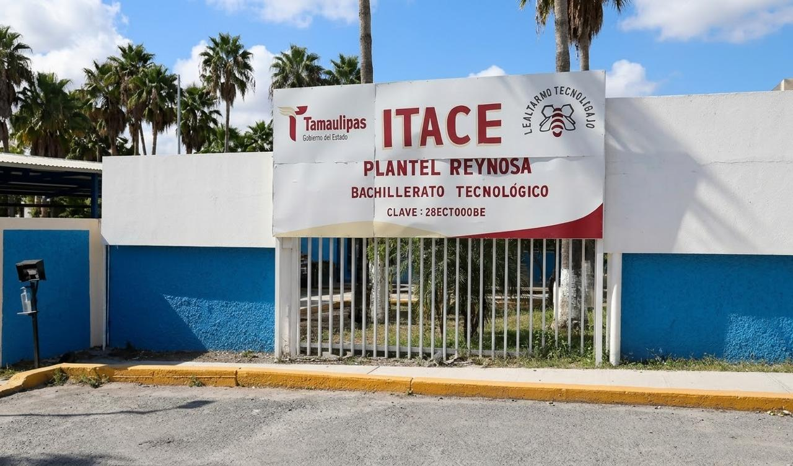
1984Fundación
Se funda el ITACE en Ciudad Victoria, Tamaulipas, para preparar a los estudiantes para el empleo calificado.
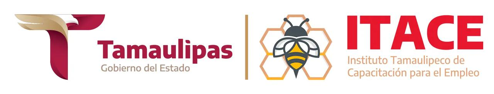
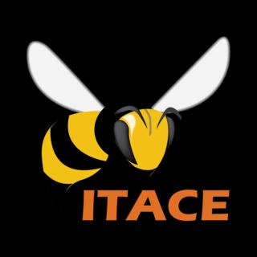
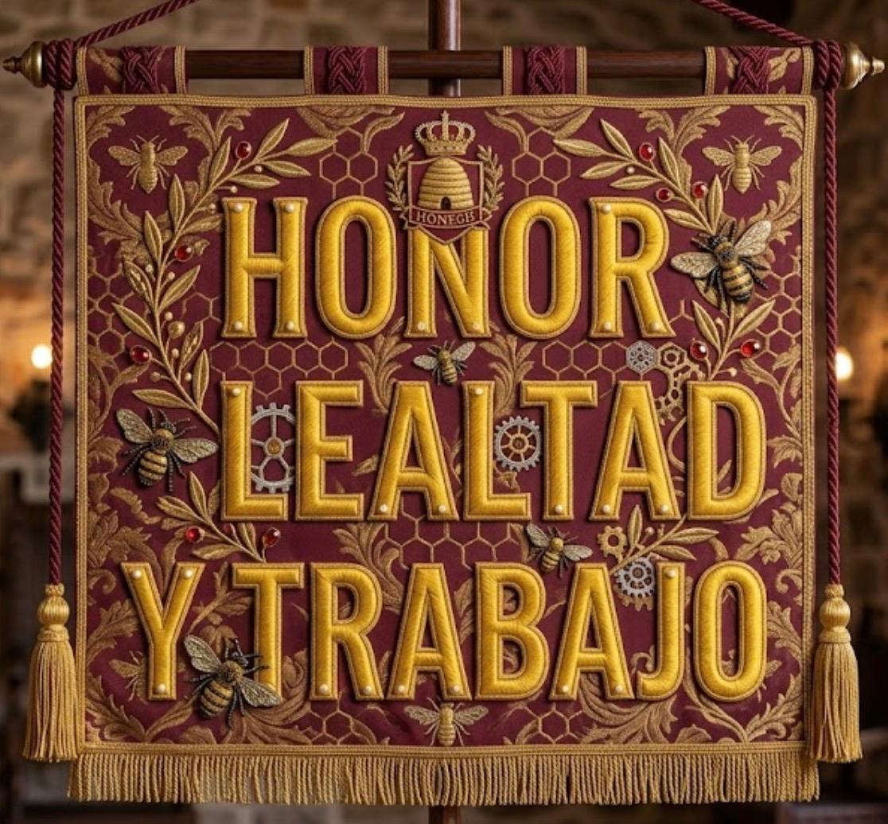
Un espacio donde aprendemos, crecemos y construimos nuestro futuro a través de la educación.
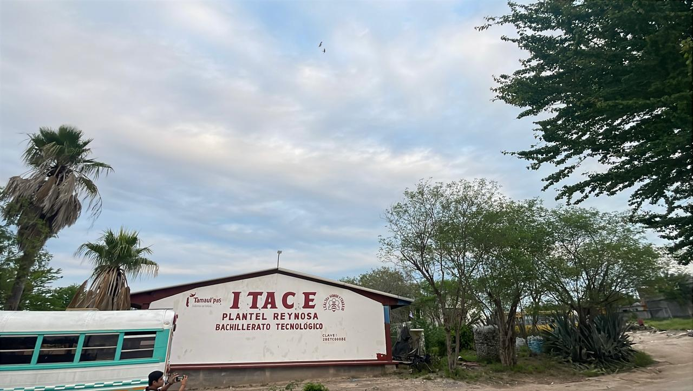
Esta página fue creada para presentar mi escuela, mostrar algunos de sus espacios y compartir una pequeña parte de la experiencia que vivimos como estudiantes.
El ITACE es un lugar donde no solamente asistimos a clases, sino que también desarrollamos habilidades, conocimientos y experiencias que nos ayudan a prepararnos para nuestro futuro.
Aprender hoy para construir nuestro futuro.
Escuela
Aprendizajes
Comunidad
Un recorrido por los espacios y lugares que forman parte de nuestra escuela.
Nuestra escuela cuenta con diferentes espacios destinados al aprendizaje, la convivencia, el deporte y el desarrollo de habilidades.
Cada salón, área verde y espacio común forma parte de la vida escolar y de los recuerdos que construimos durante nuestra etapa como estudiantes.
Un breve recorrido por los momentos más importantes de nuestra institución.

1984Se funda el ITACE en Ciudad Victoria, Tamaulipas, para preparar a los estudiantes para el empleo calificado.
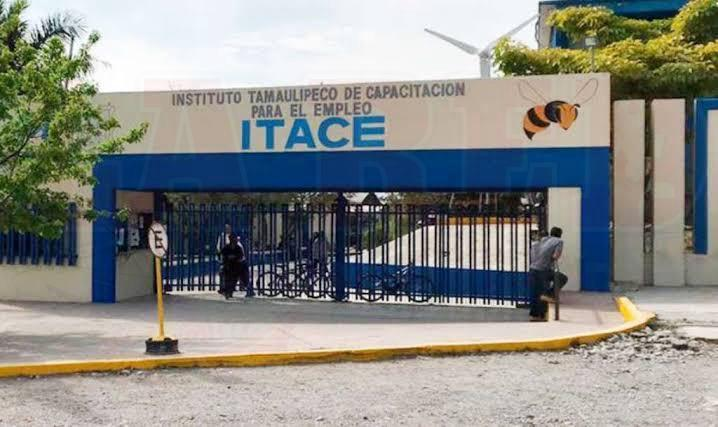
1991Se establece un convenio para crear las unidades de Altamira y Reynosa. Posteriormente se incorpora Matamoros.
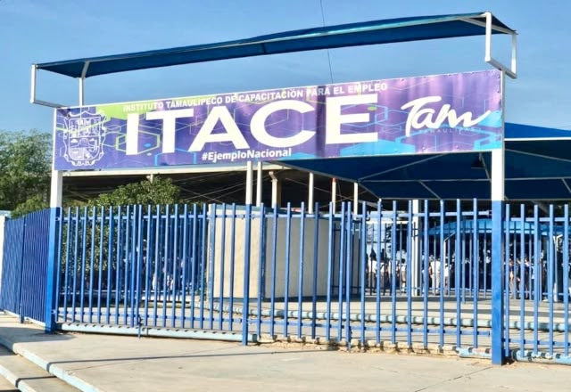
1998El ITACE comienza a ofrecer formación técnica con bachillerato, permitiendo continuar estudios superiores.
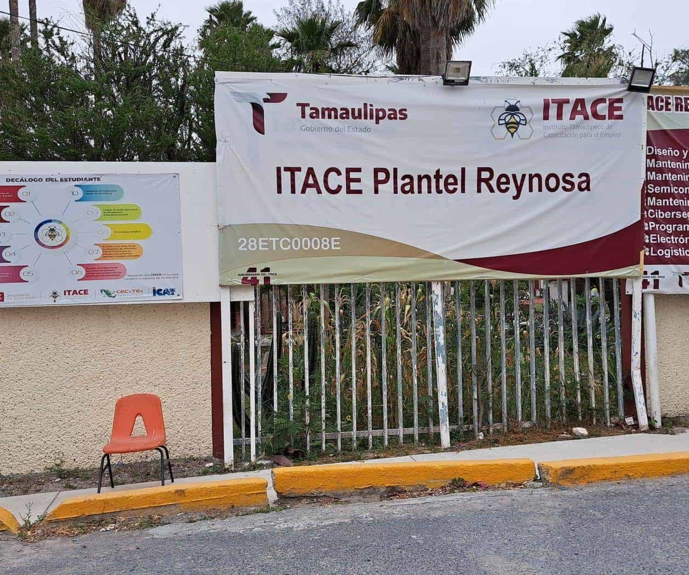
EvoluciónLa institución actualiza sus programas e incorpora tecnologías, competencias profesionales y habilidades socioemocionales.
El ITACE sigue formando estudiantes con conocimientos académicos, técnicos y valores para su futuro.
Estos son algunos de los espacios que podemos encontrar dentro del ITACE.
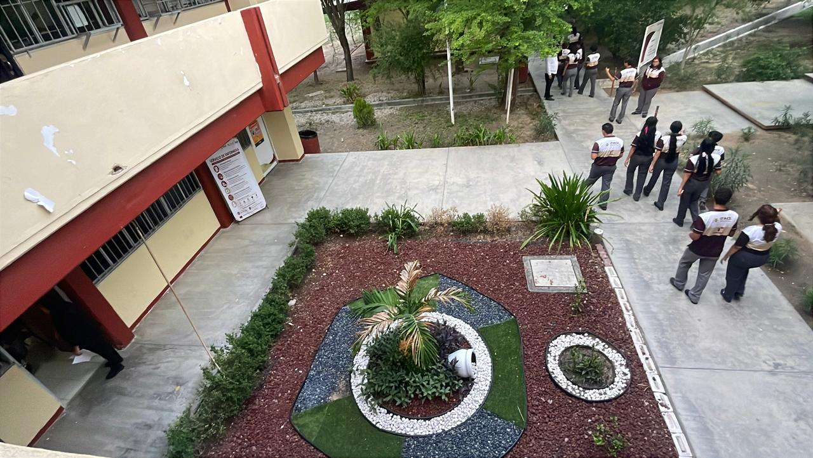
01Espacios donde los estudiantes pueden descansar, convivir y disfrutar de un ambiente más tranquilo durante la jornada.
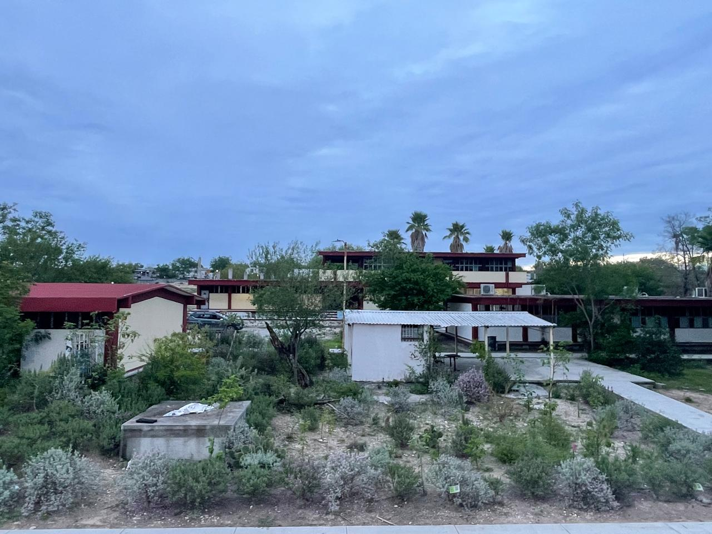
02En estos espacios se llevan a cabo las clases relacionadas con las diferentes especialidades y módulos.
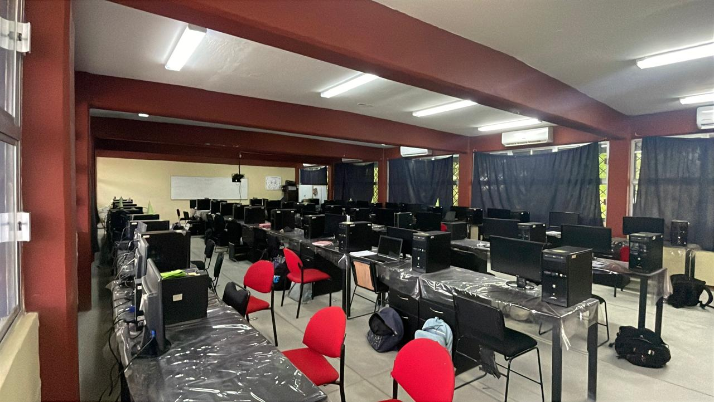
03Un espacio donde desarrollamos habilidades relacionadas con la programación, tecnología, sistemas y desarrollo de proyectos.
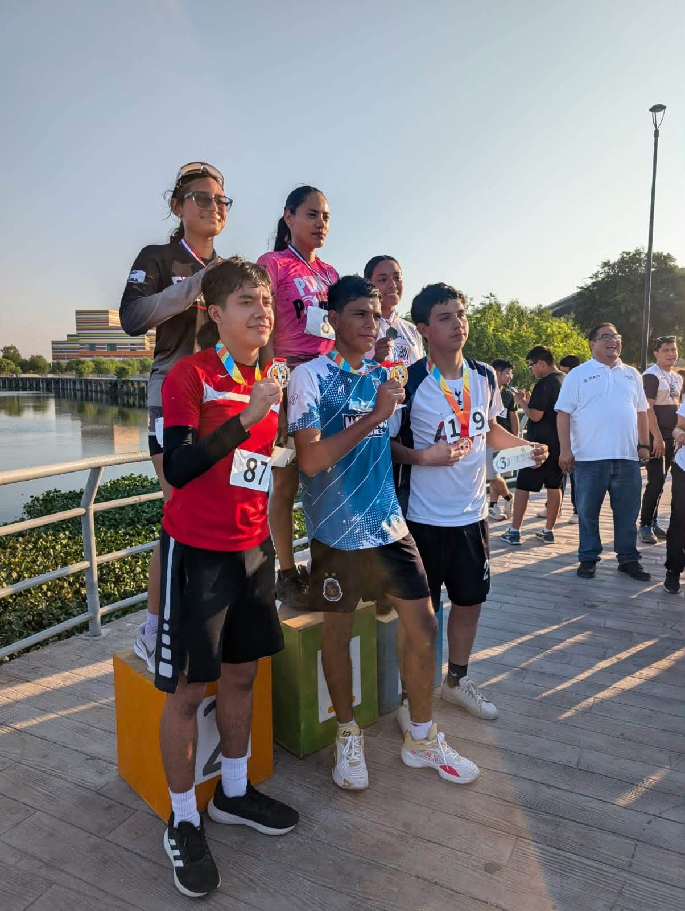
04Espacios destinados a la actividad física, el deporte y la convivencia entre estudiantes.
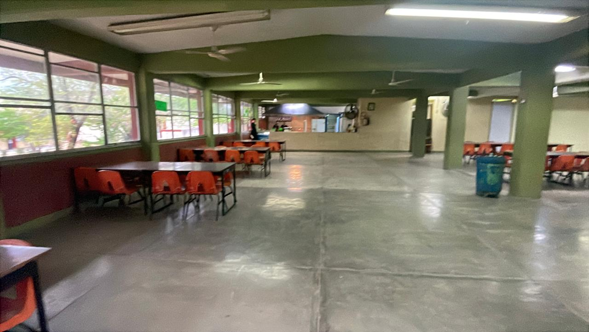
05Lugar donde los estudiantes pueden disfrutar de un momento de descanso durante sus actividades.
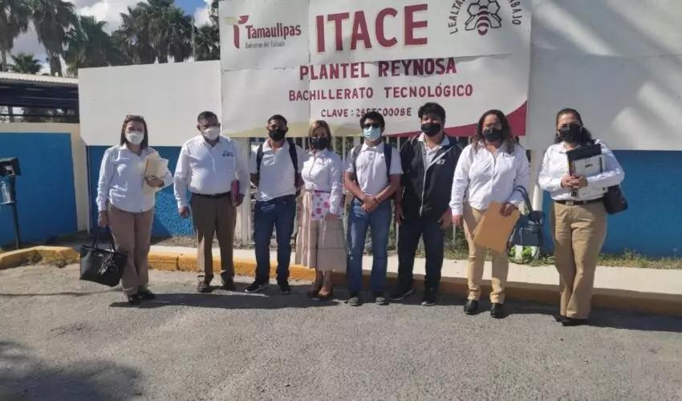
06Espacios donde docentes y estudiantes trabajan juntos para desarrollar conocimientos y habilidades.
La formación técnica es una parte importante de la experiencia escolar.
Desarrollo de programas, páginas web, aplicaciones y soluciones tecnológicas.

Promueve la disciplina, la coordinación, el respeto y el orgullo por los símbolos cívicos.
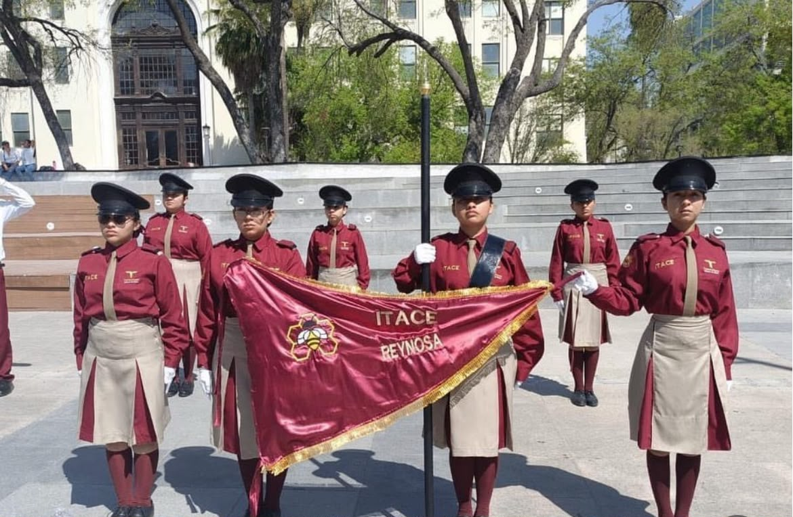
Representa el respeto a la bandera, la responsabilidad y el compromiso cívico.
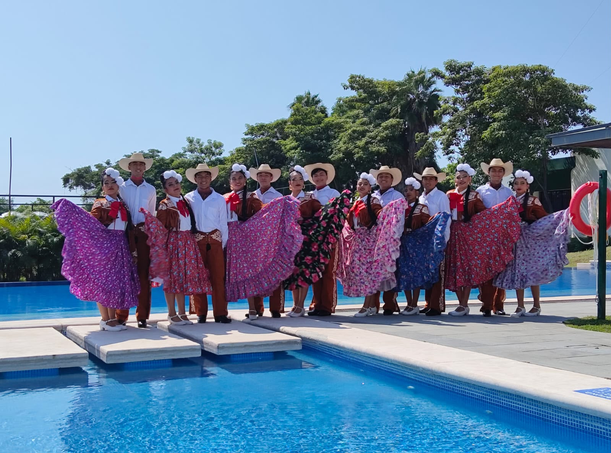
Fomenta la expresión artística, la coordinación y el conocimiento de las tradiciones culturales.
Un espacio para compartir trabajos, prototipos e ideas creadas por estudiantes del ITACE.
Presenta aquí páginas web, aplicaciones y soluciones tecnológicas elaboradas por estudiantes.
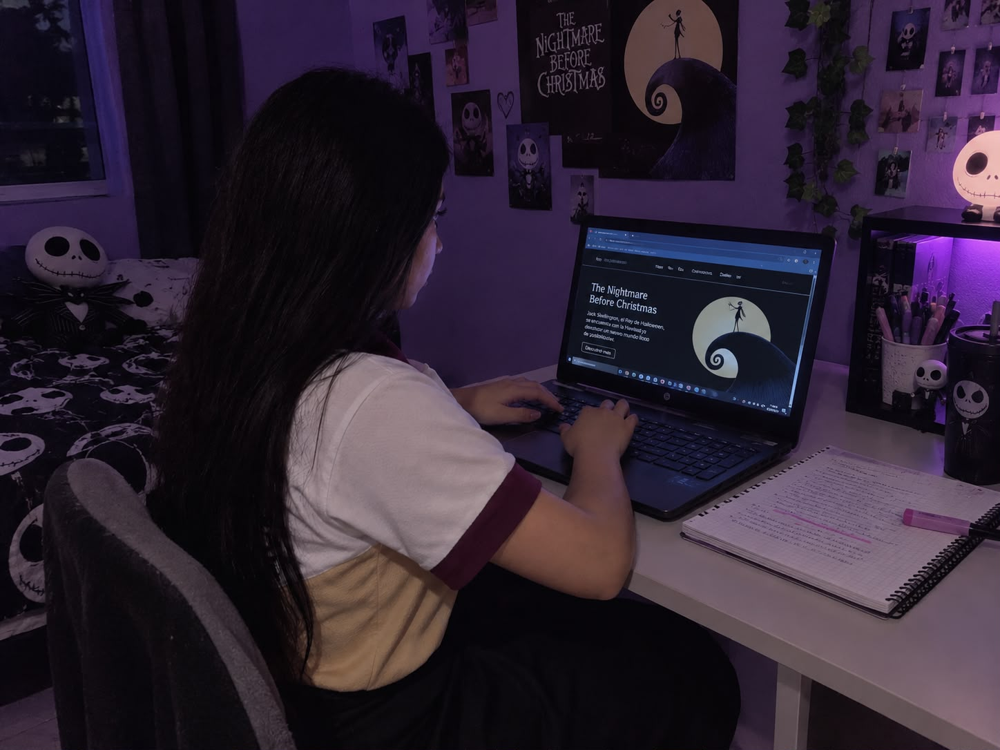
Comparte fotografías y una descripción breve de prototipos, prácticas técnicas o experimentos autorizados.
Espacio para agregar proyectos reales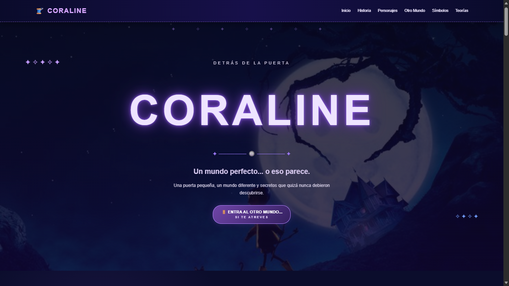
Incluye exposiciones, investigaciones, materiales gráficos y otros trabajos destacados del alumnado.
Espacio para agregar proyectos realesLos docentes aparecerán cuando escribas un nombre o elijas una materia o academia.
Escribe un nombre o selecciona una materia o academia para ver resultados.
Empieza escribiendo o seleccionando un filtro.
Solo deben agregarse datos académicos autorizados. Usa un avatar genérico si no se cuenta con una fotografía aprobada.
Honor, lealtad y trabajo son principios que orientan el compromiso con la comunidad escolar.
Actuar con honestidad, dignidad y respeto, procurando hacer lo correcto y responder por nuestras acciones.
Mantener el compromiso con nuestra escuela y comunidad, demostrando respeto, confianza y sentido de pertenencia.
Esforzarnos con responsabilidad, constancia y colaboración para aprender, superar retos y alcanzar metas.
Haz clic en cualquier fotografía para verla en grande.
Algunas formas en las que nuestra comunidad aprende, participa y convive.
Momentos de convivencia y participación entre integrantes de la comunidad escolar.
El deporte fomenta el trabajo en equipo, la disciplina y el compañerismo.
Los proyectos permiten poner en práctica lo aprendido durante las clases.
Estas tarjetas describen tipos de actividades, no anuncian eventos con fechas confirmadas.
Conoce algunos momentos de nuestra institución.
Inicio de la trayectoria de la institución en Tamaulipas.
Convenio relacionado con la unidad de Reynosa.
Se incorpora la modalidad de bachillerato tecnológico.
Continuamos aprendiendo, creando proyectos y creciendo como estudiantes.
El ITACE forma parte de la educación técnica en Tamaulipas.
Aprendemos a desarrollar páginas web y soluciones tecnológicas.
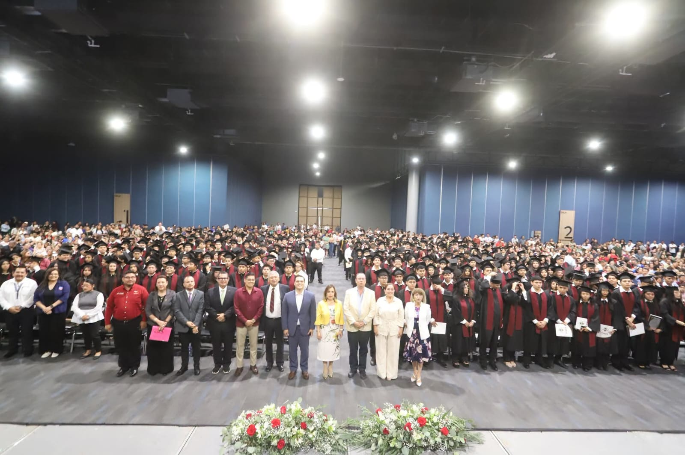
📚Combinamos conocimientos académicos y técnicos.
Nos preparamos para continuar estudiando y trabajar.
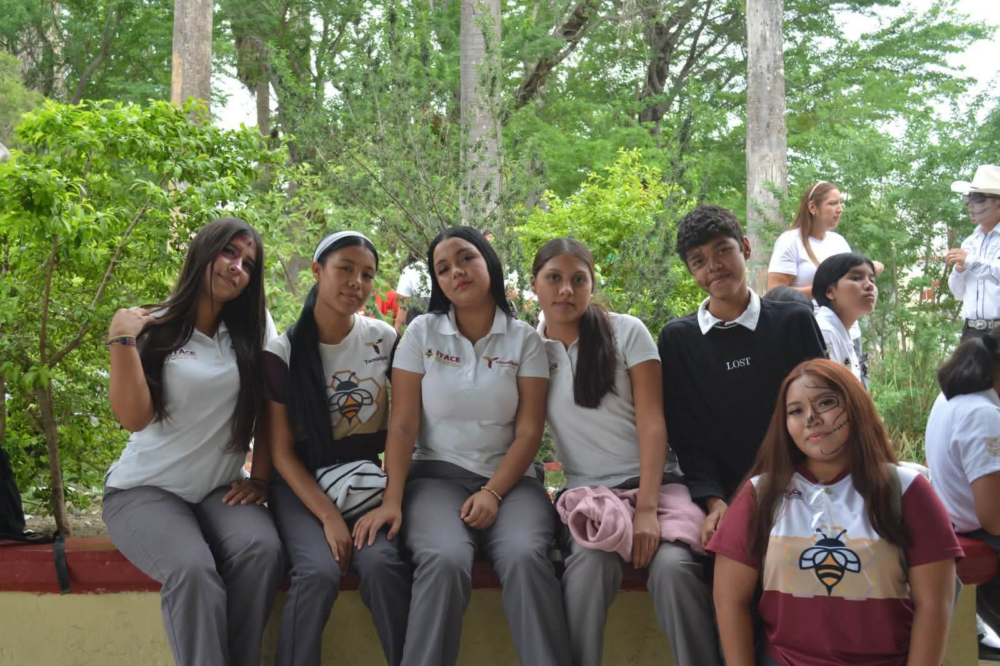
🤝Los proyectos nos ayudan a aprender en equipo.
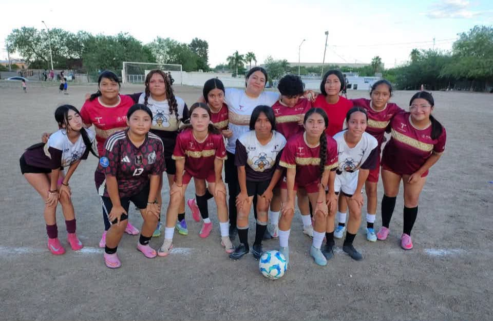
🏀La escuela también ofrece espacios para convivir y practicar deporte.
Selecciona una pregunta para ver su respuesta.
Puedes explorar los espacios escolares, la formación técnica, fotografías, actividades y una galería de videos.
Se desarrollan habilidades relacionadas con programas, páginas web, aplicaciones y proyectos tecnológicos.
Áreas verdes, salones, programación, zonas deportivas, cafetería y espacios académicos.
Entra a la sección Galería y selecciona una imagen. Usa las flechas o las teclas de dirección para cambiar de fotografía.
Consulta la dirección, el teléfono y el correo que aparecen en la sección de información al final de la página.
Estudiar en el ITACE ha sido una experiencia muy bonita, porque he aprendido muchas cosas nuevas, conocido personas y vivido momentos especiales.
Una de las cosas que más me gusta es mi especialidad de programación, ya que he aprendido sobre tecnología y a crear páginas web. Aunque a veces los trabajos son difíciles, me han enseñado a esforzarme y no rendirme.
Para mí, el ITACE no es solo una escuela, también es un lugar donde he hecho amistades, aprendido y vivido experiencias que siempre voy a recordar.
Conoce los espacios y momentos que forman parte del ITACE.
🎥 Video 1 · Recorrido por nuestra escuela
🎥 Video 2 · Más momentos del ITACE
Escucha las interpretaciones del Himno del ITACE y del Himno a Tamaulipas.
Interpretación del himno que representa la identidad de Tamaulipas. Agrega la grabación autorizada de los estudiantes y sus créditos.
Un himno que representa a nuestra comunidad escolar.
Tres principios que representan el compromiso, los valores y el esfuerzo que forman parte de nuestra comunidad escolar.
ITACE
C.8 382, Las Cumbres, 88745 Reynosa, Tamps.
Las personas y las experiencias también forman parte de la historia de nuestra escuela.
Además de las fechas y los acontecimientos importantes, la historia del ITACE se construye día con día en sus aulas, talleres y espacios de convivencia.
Las generaciones de estudiantes y docentes aportan experiencias, aprendizajes y proyectos que forman parte de la identidad de nuestra escuela.